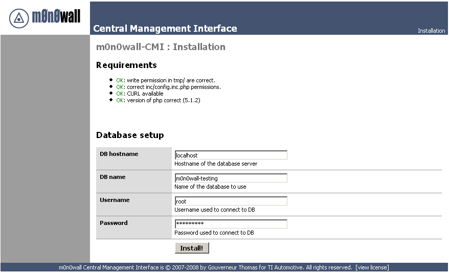
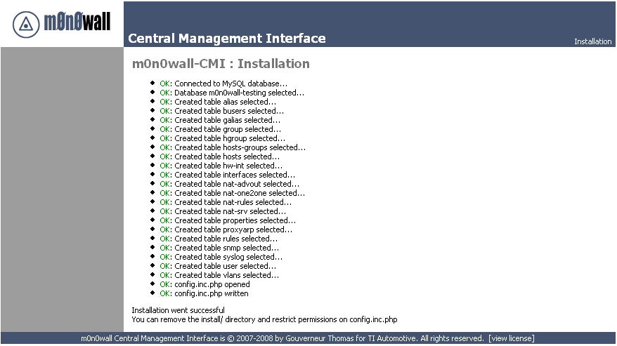

To install and use m0n0wall-CMI, you will need following things:
Latest version of this software could be found on sourceforge here
To gather latest source, you can use a CVS client. From UNIX, type following commands:
First, extract the latest archive to a web-directory of your choice.
If you use CVS version, just copy the directory gathered from CVS server.
tar xzvf m0n0wall-CMI-1.0-alpha1.tar.gz
Then, be sure to have the information of your MySQL server (credentials, rights, database) under hands,
and point your browser to http://yoursite.com/
As you can see, there is a requirement check. To correct the two first errors, issues following commands inside your m0n0wall-CMI directory:
chmod 777 tmp/
chmod 777 inc/config.inc.php
Refresh the page and you should be able to see the installation page like the following:
Fill in the information according to your MySQL credentials. Note that the database should exist and that you need right to create table inside. You should then see the detailled installation of m0n0wall-CMI, and, if you're lucky, the process should run without any error:
Your m0n0wall-CMI installation is now complete ! You can still do a little bit of cleaning in your installation by issuing commands:
chmod 444 inc/config.inc.php
rm -rf install/
If you encounter any issue during the installation, or find any bug, please report it through the sourceforge project page at https://sourceforge.net/projects/m0n0wall-cmi